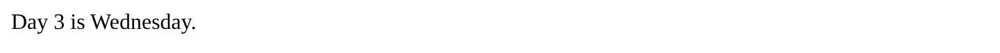

Write a PHP code to print the day of the week using a switch-case statement.
Program 3.5: Printing the Day of the Week Using switch-case
Concepts used
The switch statement, case labels, break, default.
Test data: Day number: 3. Accepted range: 1 (Monday) to 7 (Sunday).
Logic
- Store the day number.
- Compare it with the cases 1 to 7 and store the matching day name.
- If no case matches, store an error message.
- Display the result.
Code
<!DOCTYPE html><html lang="en"><head> <meta charset="UTF-8"> <title>Day of the Week</title></head><body> <?php $dayNumber = 3; switch ($dayNumber) { case 1: $dayName = "Monday"; break; case 2: $dayName = "Tuesday"; break; case 3: $dayName = "Wednesday"; break; case 4: $dayName = "Thursday"; break; case 5: $dayName = "Friday"; break; case 6: $dayName = "Saturday"; break; case 7: $dayName = "Sunday"; break; default: $dayName = ""; } if ($dayName != "") { echo "Day $dayNumber is $dayName."; } else { echo "Invalid day number $dayNumber. Enter a number from 1 to 7."; } ?></body></html>
Output
These are real screenshots, taken by running the program with the test data.

Understanding the output
The number 3 matched the third case, so "Wednesday" was printed. The outputs for other day numbers, including the boundary values 1 and 7 and the invalid values 0 and 8, are given in Table 3.5.
Table 3.5: Test Cases for Program 3.5
| Day Number | Matching Case | Output |
|---|---|---|
| 1 | case 1 | Day 1 is Monday. |
| 3 | case 3 | Day 3 is Wednesday. |
| 7 | case 7 | Day 7 is Sunday. |
| 0 | default | Invalid day number 0. Enter a number from 1 to 7. |
| 8 | default | Invalid day number 8. Enter a number from 1 to 7. |
How it works
The value 3 is compared with the cases from the top. It does not match 1 or 2, but matches case 3, so $dayName becomes "Wednesday", and break ends the switch statement at once. For a number outside 1 to 7, no case matches, and the default block stores an empty string. The if-else statement after the switch then prints either the day name or the error message, so the output for an invalid number is clearly different from the output for a valid one.
Run it yourself
Real PHP 8.3 runs inside your browser (nothing is sent to a server). Forms, links, cookies and sessions work as they do in XAMPP. The first run downloads PHP, so it needs internet and takes a few seconds.
Try this:
- Change the day number to 1, 7, 0 and 8.
- Remove one
break;and see how the output changes (fall-through).
Running it in XAMPP
Save the file in C:\xampp\htdocs\phpbook\ch03 and open http://localhost/phpbook/ch03/day-of-week.php.
Common mistakes
- Omitting break after a case, so that the day name is replaced by the name in the following case. For example, without break after case 3, the value 3 would finally store "Thursday".
- Writing a semicolon instead of a colon after a case value, as in case 3;. The colon is the standard form and should always be used.
- Writing a condition such as case
$dayNumber> 7: and expecting a range check; switch is designed for matching exact values.